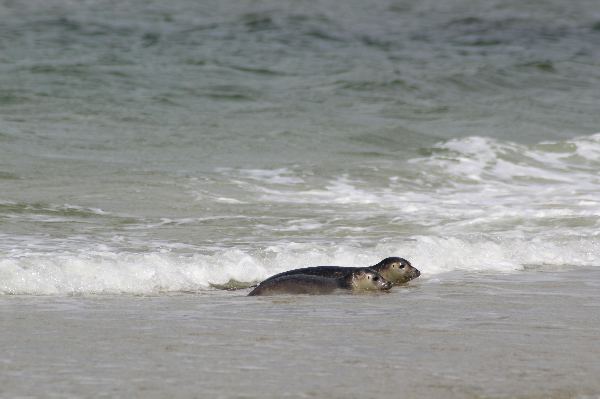
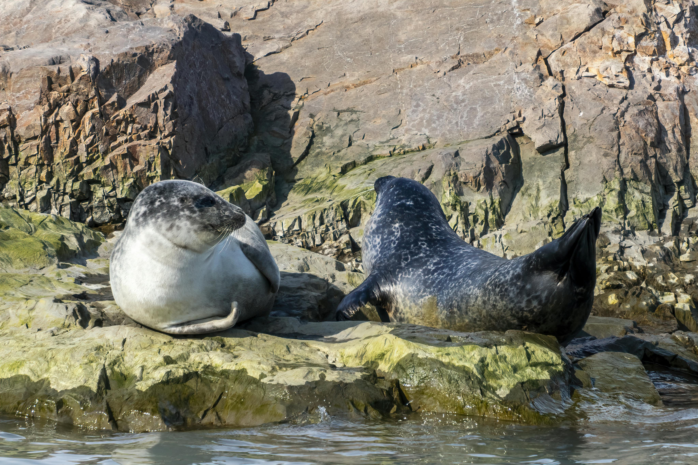
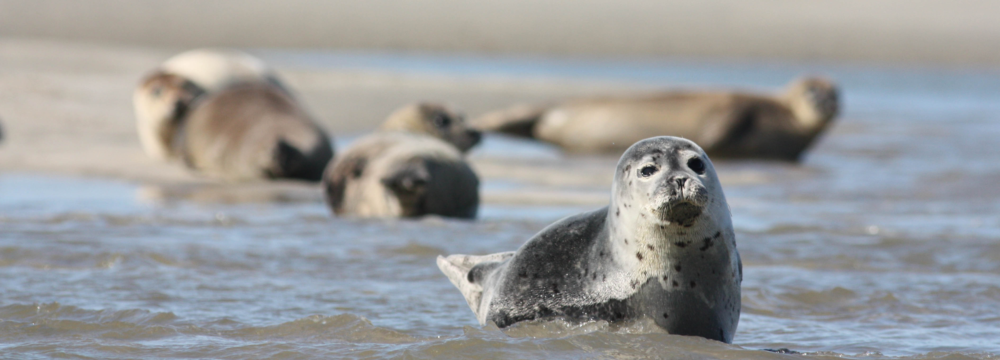
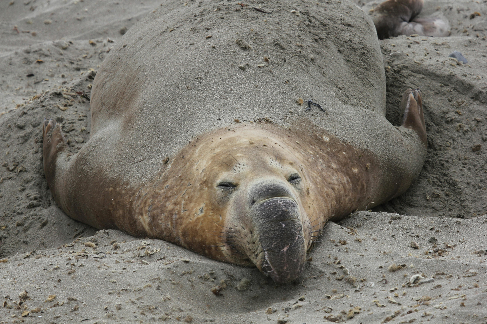

Хто вони?
Тюлені — це загальна назва напівводних ссавців із групи ластоногих (Pinnipedia), які більшу частину життя проводять у воді, але виходять на сушу чи лід для відпочинку, линьки та розмноження.

Що Вони Роблять?
Тюлені — це група морських ссавців із ряду ластоногих, які ідеально пристосовані до життя у воді.


Морські слони (лат. Mirounga) — це найбільші представники родини справжніх тюленів (Phocidae) та взагалі наймасивніші сучасні хижі ссавці у світі. Свою назву вони отримали завдяки величезним розмірам та наявності у самців шкірястого хобота на морді, який надувається під час шлюбного періоду для посилення реву.